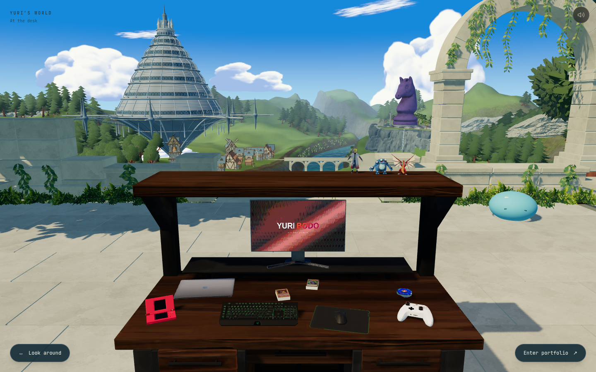
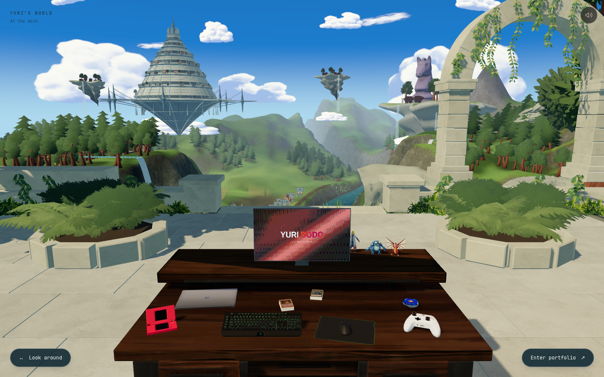
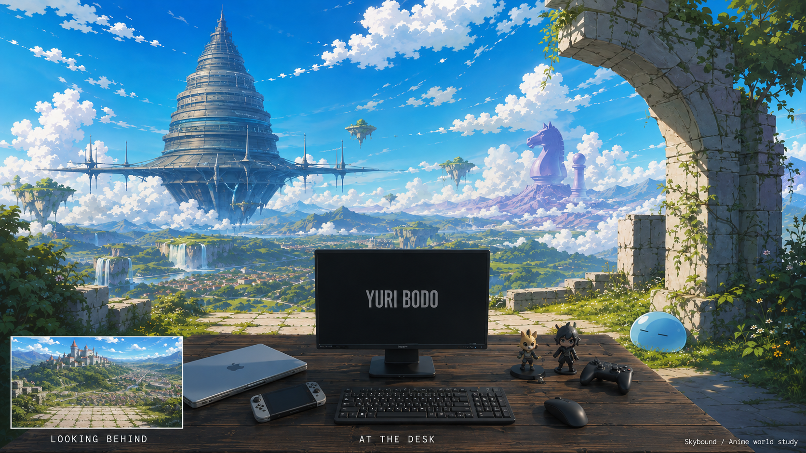

O mundo visto da mesa — registro anterior
A alteração da mesa desta passagem foi rejeitada e revertida. Veja a correção atual.
A prateleira alta virou um apoio baixo para os colecionáveis. Acima do monitor, a paisagem passa a ter uma leitura contínua: terraços com quedas-d’água, vila e campos no vale, montanhas ao fundo e ilhas habitadas entre os monumentos.


AtualAnteriorCapturas reais em 1440×900. O enquadramento mudou intencionalmente. As animações de nuvens, luz e vegetação estão em instantes diferentes.
Abrir print completo
Em movimento
Produção local: vista inicial, giro para o vale traseiro e retorno à mesa. Sem reprodução automática.
A referência aprovada

O conceito orienta o enquadramento, a hierarquia das silhuetas e a separação entre planos. A implementação ainda tem menos variedade arquitetônica, erosão e detalhe pictórico que a referência; o comparativo registra essa diferença.
Mudanças, validação e desempenho